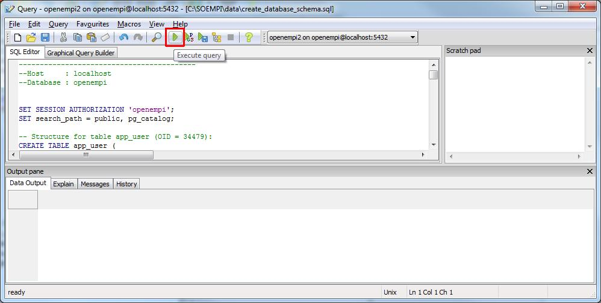

Creating database schema with pgAdmin III
- Login to openempi database if you haven't done so.
- Open up Databases/openempi/Schemas/public node.
Click on Execute arbitrary SQL queries button on the toolbar.
Note: the picture here shows an already created schema, your schema will be empty.
TODO: new screenshot for this.

- In the upcoming window's toolbar click on the Open button, say No for the question about saving.

- Browse to the create database schema script:
- Click on the Execute query button on the toolbar:

- The query should be successful: